概述
“去你大爷的升学 e 网通”是一个用于“升学 e 网通”课程网站的半自动刷课脚本。它可以实现针对单系列课程的半自动刷课。
也就是说，脚本可以完成的工作包括：
- 以“天”或“科目”为系列刷课；
- 自动开启 2 倍速；
- 篡改速率检测机制，自动开启 4 倍速（实验性功能，暂不稳定）；
- 自动点击课程中的随机“检测点”；
- 某一课程完成后跳转至当日下一节课；
- 刷完当天 / 当科目课程后弹窗提醒。
脚本不能完成的工作包括：
- 更高的速率倍数（由于后端限制）；
- 全自动听完假期所有课程；
- 帮您完成除课程之外的其他假期作业；
- 带您去吃肯德基的“疯狂星期四”优惠套餐（虽然这个要求看起来很合理，但是抱歉真的不行）。
此文档将会向您介绍“去你大爷的升学 e 网通”刷课脚本的使用方法。若您准确无误地跟随本文档操作，您应可以在之后的日子中舒适地刷课。
准备
要使用该脚本快速刷课，您需要拥有：
- 大脑
- 电脑
- 使用搜索引擎的基本技能
- 支持扩展的现代浏览器
请确保您拥有以上物品，然后开始接下来的操作。
安装
打开正确的浏览器
该脚本通过注入升学 e 网通网页实现半自动刷课。因此，您需要使用一个支持扩展的现代浏览器来刷课。本文档使用 Microsoft Edge 为例演示。
-
双击桌面上的该图标以启动 Microsoft Edge。若您找不到该图标，请善用搜索引擎。
安装用户脚本管理器
“去你大爷的升学 e 网通”刷课脚本是一个浏览器用户脚本。要使用此类脚本，您需要安装一个用户脚本管理器。本文档使用篡改猴为例演示。
-
单击此处，在弹出的新窗口中单击右侧的“获取”按钮。此后按钮字样应立即变成“正在检查…”。
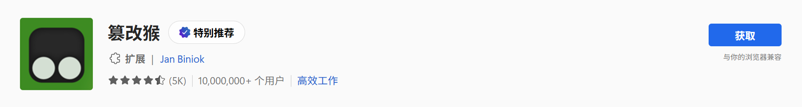紧接着，您的 Microsoft Edge 应弹出询问窗口。
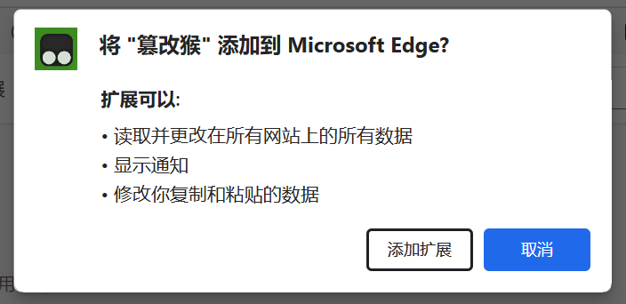 -
单击“添加扩展”。稍候片刻，您将会看到这样的提示框。这意味着您已成功安装了“篡改猴”扩展。
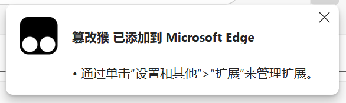 -
接下来，您需要开启“开发人员模式”，以允许扩展运行外部脚本。单击浏览器右上角菜单符号，打开菜单，单击“扩展”菜单项。
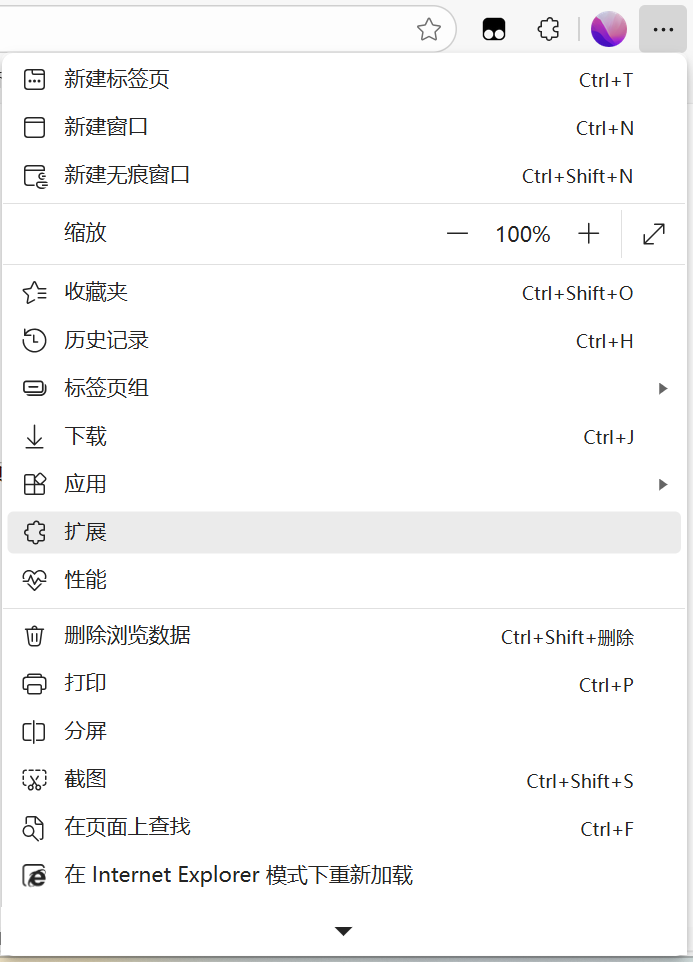 -
在弹出的二级菜单中选择“管理扩展”菜单项。
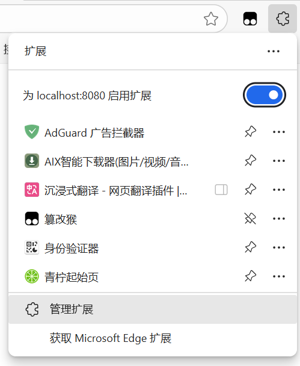 -
在新弹出的窗口中，找到左下角的“开发人员模式”开关并开启。
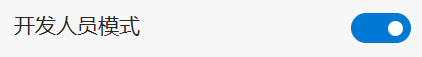
添加用户脚本
接下来，您只需将“去你大爷的升学 e 网通”刷课脚本本体添加至篡改猴。
-
单击此处，在弹出的新窗口中单击“安装”按钮以安装稳定版。
若您希望使用更快的速度，您可以单击此处，在弹出的新窗口中单击“安装”按钮以安装测试版（可篡改速率检测函数，不稳定）。然后在开发人员工具中启用“网络请求阻止”，手动拦截“cdn.ewt360.com/resources/app/prod/mst-video-player/dist/mstplayer-v3.0.min.js”。
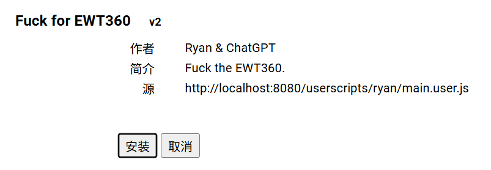
小结
至此，您成功安装了脚本。接下来，您将学习该脚本的使用方法。
使用
打开一节课
-
单击此处，打开其中任意一个课程视频。
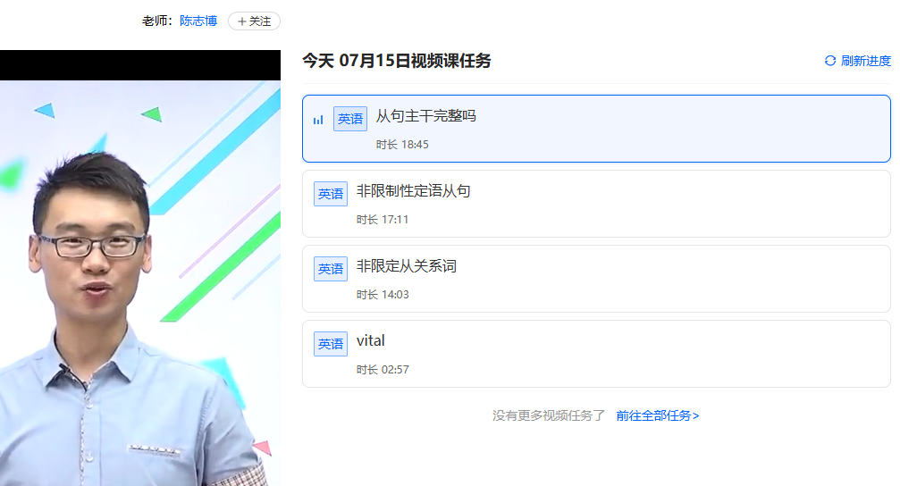 -
按下 Ctrl + Shift + I 组合键。您应看到浏览器弹出了开发人员工具，默认处于“元素”选项卡。
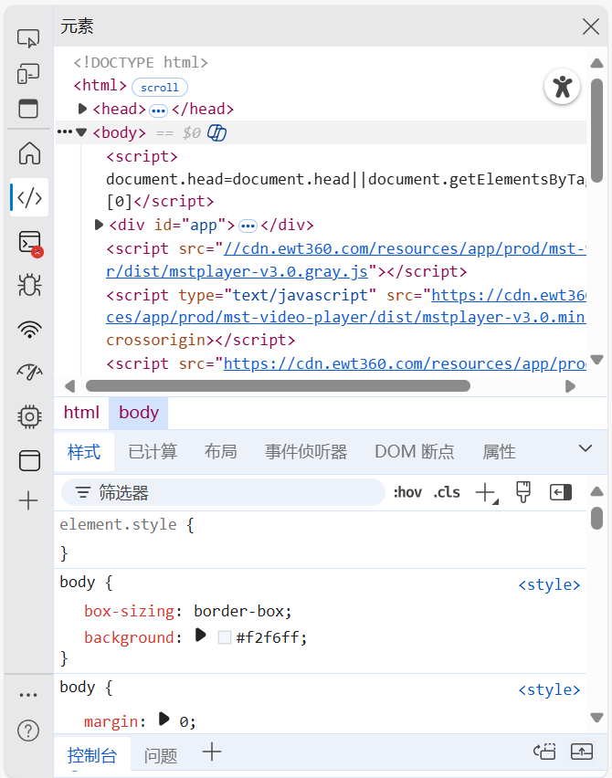 -
单击“控制台”选项卡。
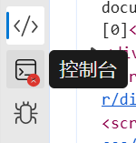 -
若您能够看到紫色背景、白色粗体大字的日志，证明脚本运行正常。接下来，您可以干些自己的事，静等课程刷完。
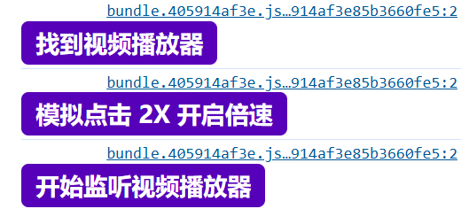
小结
现在起，您可以愉快地刷课了。
（小技巧：您可以以“科目”为列表而非以“日”为列表，这样可最大限度地延长无人值守时间。）
卸载
-
单击浏览器右上角菜单符号，打开菜单，单击“扩展”菜单项。
-
在弹出的二级菜单中选择“管理扩展”菜单项。
-
在新弹出的窗口中，找到“篡改猴”扩展，单击“删除”选项，在弹出的对话框中单击“删除”。
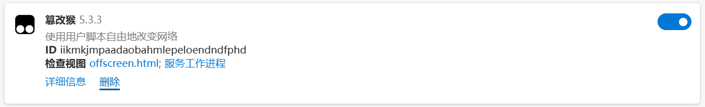 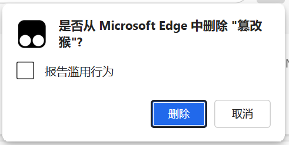